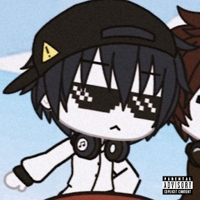

Azuria Mandrian
Teknologi | 20 Juli 2025
SiapaItu Azuria Mandrian!
(Korean: 라파; born Oct 12, 2008) is an Indonesian gamer and content creator. He started his YouTube journey at age 7 with Minecraft content,then shifted to the Gacha genre in 2019, gaining major attention in the community. 2015-2018 Minecraft beginnings at age 7 2019-Present focused on Gacha Life/Club storytrlling 2025 celebrated 10 years on youtube with nostalgic Minecraft

Teknologi | 20 Juli 2025
My YouTube Channel This!
Follow his content on @Azuriamandrian08 check out the special playlist: 10th Azuria Mandrian